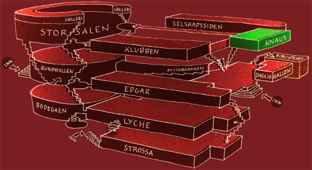

Knaus
I 20 år har Knaus vært plassen der det beste av ny norsk musikk blir presentert. I 1987 skapte det da ukjente Dum Dum Boys liv på scenen på Knaus, og nå er de et av de mest sentrale banda i norsk rockehistorie. I løpet av den første halvdelen av 2000-tallet har Knaus vært et springbrett for band som Gåte, El Caco, Sissy Wish, The Lionheart Brothers og Superfamil
Visste du at?
- Opprinnelig var Knaus en spisesal, men etter at nåværende Edgar fikk kjøkken i 1964, ble middagsserveringen flyttet dit. Siden har lokalet fungert som blant annet møtelokale for Samfundsstyret og som fyllearrest.
- De sorte veggene i lokalet ble satt opp i forbindelse med en UKA-oppussing i 1970-årene. Bak gjemmer det seg store veggmalerier av kunstneren Knut Knaus.